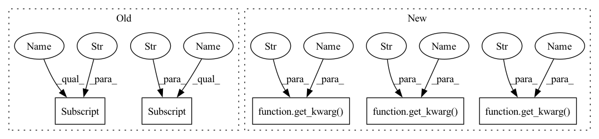

Pattern ID :12104
Before Change
metric = isc_features_to_metric(
features,
kwargs["isc_splits"],
kwargs["shuffle_on"] ,
kwargs["rng_seed"] ,
)
return metric
After Change
features = featuresdict[feat_layer_name]
metric = isc_features_to_metric(
features,
get_kwarg("isc_splits" , kwargs ) ,
get_kwarg("samples_shuffle" , kwargs ) ,
get_kwarg("rng_seed" , kwargs ) ,
)
return metric
In pattern: SUPERPATTERN
Frequency: 4
Non-data size: 5
Instances Fragment ID: 40828452
Project Name: toshas/torch-fidelity
Commit Name: 717fd082e01f8e6f40ae82b24760205d752bd812
Time: 2020-04-28
Author: anton.obukhov@vision.ee.ethz.ch
File Name: torch_fidelity/metric_isc.py
M Class Name: AnonimousClass
N Class Name: AnonimousClass
M Method Name: isc_featuresdict_to_metric(2)
N Method Name: isc_featuresdict_to_metric(2)
M Parent Class:
N Parent Class:
M File Name: torch_fidelity/metric_isc.py
N File Name: torch_fidelity/metric_isc.py
M Start Line: 40
M End Line: 42
N Start Line: 42
N End Line: 44
Before Change
def calculate_kid(input_1, input_2, **kwargs):
feat_layer_name = kwargs["feature_layer_kid"]
feat_extractor = create_feature_extractor(
kwargs["feature_extractor"] ,
[feat_layer_name],
**kwargs
)After Change
def calculate_kid(input_1, input_2, **kwargs):
feat_layer_name = get_kwarg("feature_layer_kid" , kwargs)
feat_extractor = create_feature_extractor(
get_kwarg("feature_extractor" , kwargs) ,
[feat_layer_name],
**kwargs
)
cacheable_input1_name = get_input_cacheable_name(input_1, get_kwarg("cache_input1_name", kwargs))
cacheable_input2_name = get_input_cacheable_name(input_2, get_kwarg("cache_input2_name" , kwargs) )
featuresdict_1 = extract_featuresdict_from_input_cached(input_1, cacheable_input1_name, feat_extractor, **kwargs)
featuresdict_2 = extract_featuresdict_from_input_cached(input_2, cacheable_input2_name, feat_extractor, **kwargs) Fragment ID: 40828453
Project Name: toshas/torch-fidelity
Commit Name: 717fd082e01f8e6f40ae82b24760205d752bd812
Time: 2020-04-28
Author: anton.obukhov@vision.ee.ethz.ch
File Name: torch_fidelity/metric_kid.py
M Class Name: AnonimousClass
N Class Name: AnonimousClass
M Method Name: calculate_kid(2)
N Method Name: calculate_kid(2)
M Parent Class:
N Parent Class:
M File Name: torch_fidelity/metric_kid.py
N File Name: torch_fidelity/metric_kid.py
M Start Line: 102
M End Line: 104
N Start Line: 104
N End Line: 115
Before Change
for i in tqdm(range(kid_subsets)):
f1 = features_1[rng.choice(len(features_1), kid_subset_size, replace=False)]
f2 = features_2[rng.choice(len(features_2), kid_subset_size, replace=False)]
o = polynomial_mmd(f1, f2, kwargs["kid_degree"] , kwargs["kid_gamma"] , kwargs["kid_coef0"])
mmds[i] = o
return {After Change
features_1 = features_1.cpu().numpy()
features_2 = features_2.cpu().numpy()
kid_subsets = get_kwarg("kid_subsets" , kwargs)
kid_subset_size = get_kwarg("kid_subset_size" , kwargs)
mmds = np.zeros(kid_subsets)
rng = np.random.RandomState(get_kwarg("rng_seed" , kwargs) )
for i in tqdm(range(kid_subsets)):
f1 = features_1[rng.choice(len(features_1), kid_subset_size, replace=False)] Fragment ID: 40828450
Project Name: toshas/torch-fidelity
Commit Name: 717fd082e01f8e6f40ae82b24760205d752bd812
Time: 2020-04-28
Author: anton.obukhov@vision.ee.ethz.ch
File Name: torch_fidelity/metric_kid.py
M Class Name: AnonimousClass
N Class Name: AnonimousClass
M Method Name: kid_features_to_metric(2)
N Method Name: kid_features_to_metric(2)
M Parent Class:
N Parent Class:
M File Name: torch_fidelity/metric_kid.py
N File Name: torch_fidelity/metric_kid.py
M Start Line: 76
M End Line: 85
N Start Line: 78
N End Line: 87
Before Change
def calculate_isc(input, **kwargs):
feat_layer_name = kwargs["feature_layer_isc"]
feat_extractor = create_feature_extractor(
kwargs["feature_extractor"] ,
[feat_layer_name],
**kwargs
)After Change
def calculate_isc(input1, **kwargs):
feat_layer_name = get_kwarg("feature_layer_isc" , kwargs)
feat_extractor = create_feature_extractor(
get_kwarg("feature_extractor" , kwargs) ,
[feat_layer_name],
**kwargs
)
cacheable_input1_name = get_input_cacheable_name(input1, get_kwarg("cache_input1_name" , kwargs) )
metric = isc_input_to_metric(input1, cacheable_input1_name, feat_extractor, feat_layer_name, **kwargs)
return metric
Fragment ID: 40828451
Project Name: toshas/torch-fidelity
Commit Name: 717fd082e01f8e6f40ae82b24760205d752bd812
Time: 2020-04-28
Author: anton.obukhov@vision.ee.ethz.ch
File Name: torch_fidelity/metric_isc.py
M Class Name: AnonimousClass
N Class Name: AnonimousClass
M Method Name: calculate_isc(1)
N Method Name: calculate_isc(1)
M Parent Class:
N Parent Class:
M File Name: torch_fidelity/metric_isc.py
N File Name: torch_fidelity/metric_isc.py
M Start Line: 53
M End Line: 55
N Start Line: 55
N End Line: 62